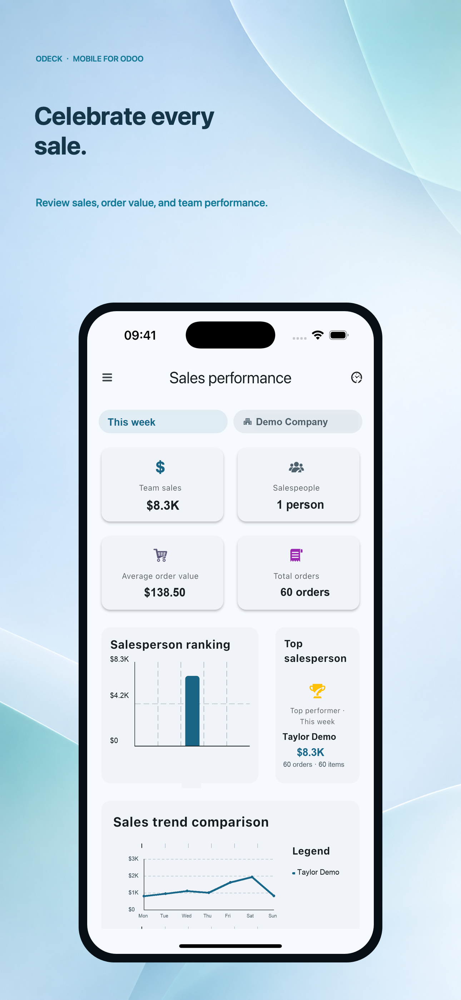
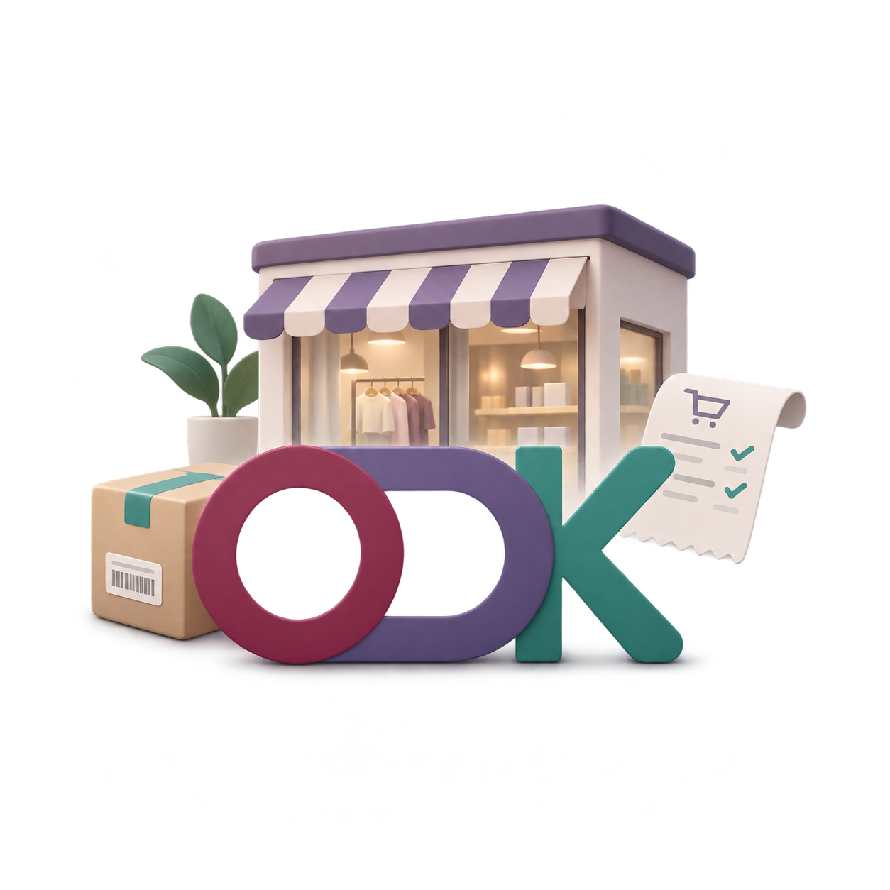
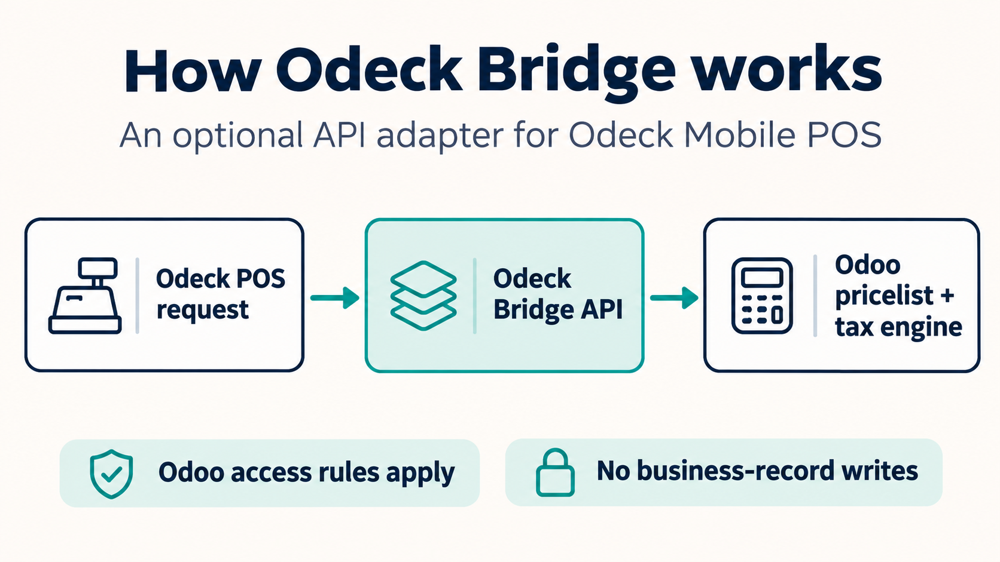

THE BIGGER PICTURE
The performance view brings sales totals, team rankings, and trends together. This showcase uses sample figures to demonstrate the layout; your Odoo account supplies your own data.

COMPANION CLIENT PREVIEW
These simulator screens show the separate Odeck Mobile client. Odeck Bridge itself adds no mobile UI, menus, or new business models; it provides server-side calculation endpoints for POS.
Example figures in the screenshots are illustrative. The client reads business records from the connected Odoo database.

© 2026 Odeck
OPTIONAL SERVER COMPANION
A small, permission-checked adapter that lets Odeck Mobile use Odoo's own pricelist and tax engines for POS calculations.
The addon has no user-facing menus and does not replace standard Odoo workflows.

Uses standard products, orders, inventory and POS data.
Odoo model access and company rules remain in force.
Install Bridge only when the POS flow needs server-side calculations.
Bridge calculation endpoints do not create or update business records.
account and product modules.odeck_bridge in an Odoo addons path.